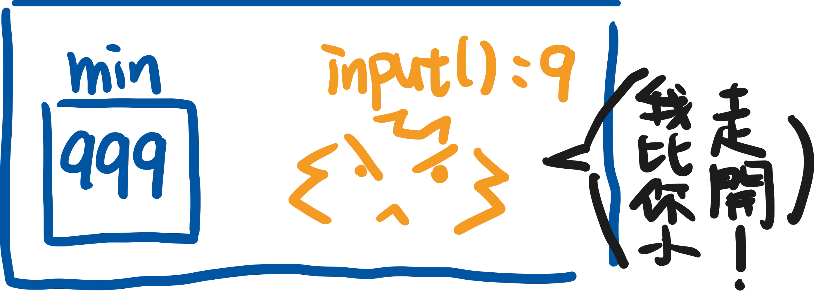
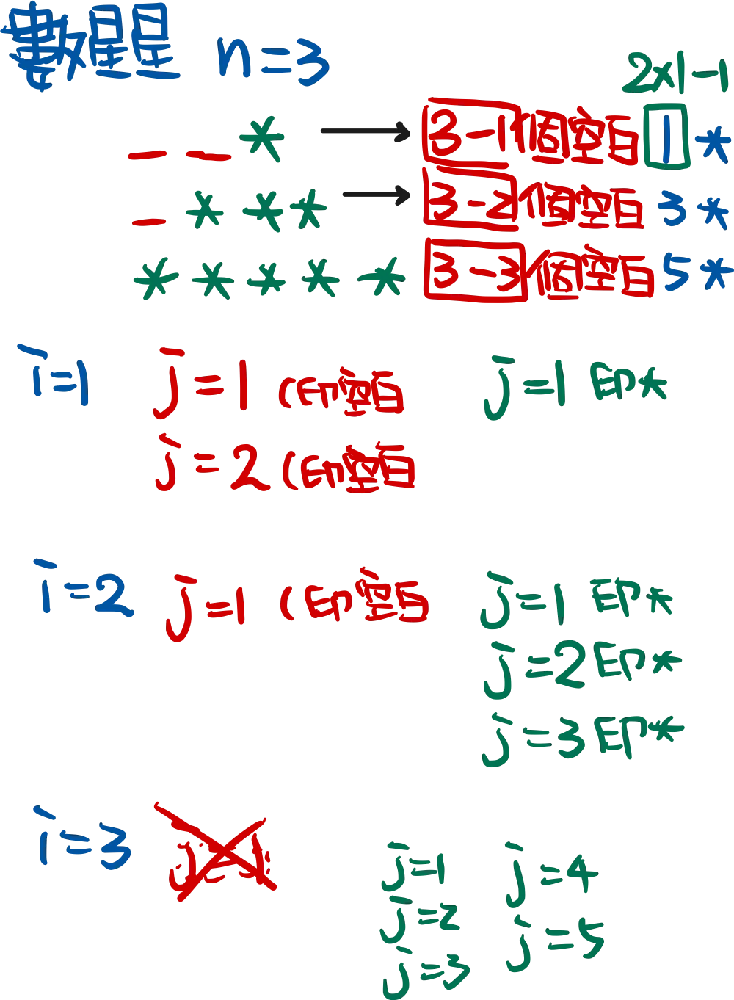

TQC題庫-第四大類_不定數迴圈_While
這篇文章教你透過各種程式技巧解決數學問題。從找最小值到反轉字串，文章介紹如何使用清爽的變數和函式來簡化程式碼，避免肉眼難以理解的數字。再來是BMI計算，用胖瘦星球之旅掌握你的體重狀態。最後還帶你輕鬆判斷數字奇偶性和在螢幕上印出絢麗的星狀圖案，真是讓人啼笑皆非的內容！
402
利用一個變數儲存最小值，當每次輸入有更小的時候，就做替換。

1 | |
考進階的同學可以使用list 中的min() 函式解題更為簡單，也減少一開始要設定min變數一個很大的值，這個不自然的想法。
1 | |
404
字串範圍的使用方法類似range() ，使用方法為：字串[開始:結束的條件:間隔]
若要反轉，間隔為-1，開始與結束條件可省略。
1 | |
406
此題注意BMI公式要轉換為公尺。
1 | |
408
設定變數e與o 儲存偶數和奇數的個數，判斷奇偶後進行計數。
1 | |
410
建議自行跑一次i與j 的迴圈（如下圖）。
1 | |

1 | |
TQC題庫-第四大類_不定數迴圈_While
https://codinglu.tw/2025/03/tqc-question-bank-fourth-category-undetermined-number-loop-while-tqc-certification/
📌 本文瀏覽量：
0 次